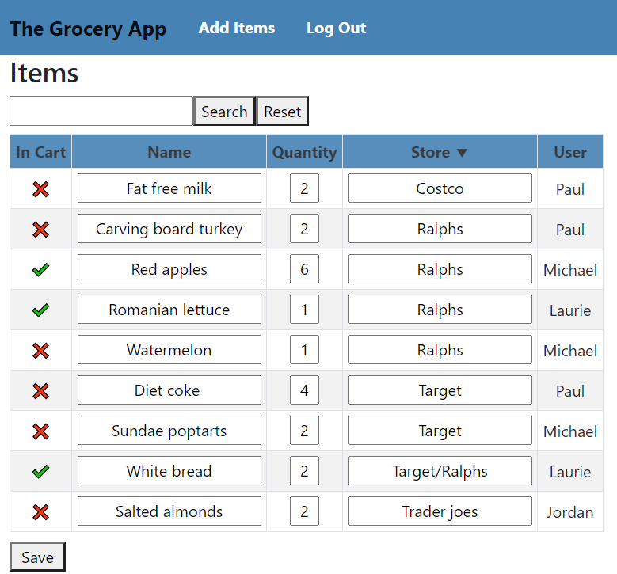

Welcome to my Project Page
Michael Krinsky
The Grocery App
|
I wanted to create an app that would help people stay safe during the COVID-19 crisis. So, I decided on a centralized online application to store grocery items. This way, several families could share grocery lists to hopefully limit the amount of people that needed to go to the store. The grocery app is optimized to fit perfectly on an Iphone screen so it is easy to use while in a store. |
|
|
Features
|
 |

The grocery list has a search bar to look for specific items. It can also be sorted by store or name to easily navigate the grocery list.
Security

- Angular Framework by Google
- HTML / CSS / JavaScript
- Java Webservice (Spring Boot)
- Java Persistence API
- MySQL Database
- Amazon EC2 Linux Server
Next Project
This is what I am working on next